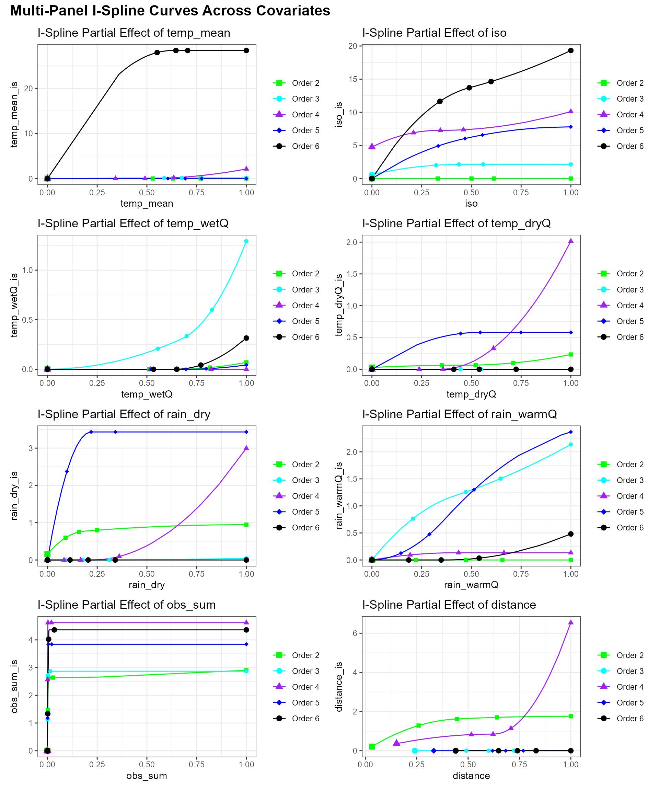
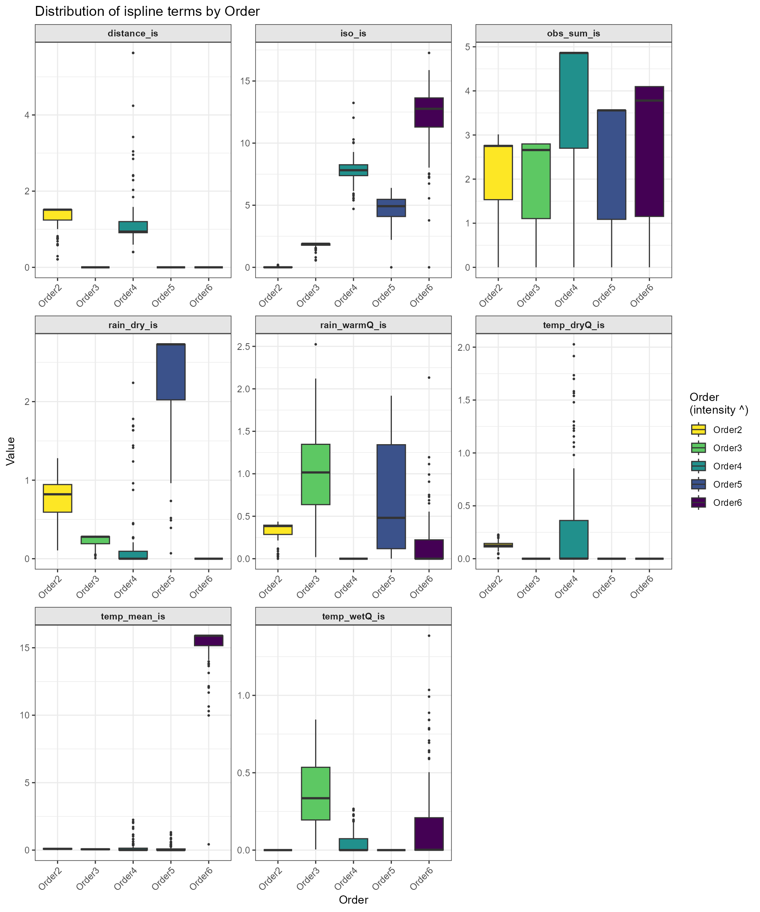

dissmapr
A Novel Framework for Automated Compositional Dissimilarity and Biodiversity Turnover Analysis
1. Automated Ispline Modeling & Visualization
To streamline the exploration of multi‐site turnover drivers, we now introduce an automated sub-workflow that fits, extracts and visualizes I-spline models for any set of zeta orders in just three function calls. Rather than manually looping over orders, binding tables, and crafting bespoke plots, you can:
-
Run and combine all ispline GLMs via
run_ispline_models(), which:>- Calls
Zeta.msgdm()for each order of interest (e.g. ζ₂…ζ₆) - Extracts both the raw covariates (including geographic distance) and their spline bases
- Returns one tidy tibble tagged by
zOrder, ready for plotting or further analysis
- Calls
-
Inspect partial-dependence curves with
plot_ispline_lines(), which:>- Automatically locates the spline column matching any chosen
covariate (e.g. “dist” →
dist_is) - Draws each zeta-order’s I-spline curve with thin lines
- Overlays small markers at user-specified quantiles of the raw predictor and a larger symbol at each curve’s minimum
- Automatically locates the spline column matching any chosen
covariate (e.g. “dist” →
-
Summarize overall variation using
plot_ispline_boxplots(), which:- Detects every
_isspline column in your data - Pivots to long format and produces facetted boxplots for each term
- Applies a color-blind–safe Viridis palette with independent scales per facet
- Detects every
By packaging these steps into self-documented functions, we embed ispline modeling and visualization into our RMarkdown workflow with a single, transparent call. The parameters (orders, covariate name, colors, shapes, etc.) are fully customizable, while sensible defaults minimize boilerplate, ensuring reproducibility, readability and ease of maintenance in automated biodiversity turnover analyses.
2. Fit and combine ispline models
The following chunk uses our run_ispline_models() helper
to fit Zeta.msgdm(reg.type = “ispline”) for orders 2–6,
extract both raw covariates (including distance) and their spline bases,
and bind everything into one tidy table tagged by
zOrder.
# Fit & gather ispline outputs for orders 2:6
set.seed(123) # set.seed to generate exactly the same random results i.e. sam=100
ispline_gdm_tab = dissmapr::run_ispline_models(
spp_df = grid_spp_pa[,-(1:6)],
env_df = env_vars_reduced,
xy_df = grid_env[, c("centroid_lon", "centroid_lat")],
orders = 2:6,
sam = 100, # Set really low to run fast
normalize = "Jaccard",
reg_type = "ispline"
)
str(ispline_gdm_tab, max.level=1)
#> List of 2
#> $ zeta_gdm_list:List of 5
#> $ ispline_table:'data.frame': 500 obs. of 17 variables:
ispline_tabs_all = ispline_gdm_tab$ispline_table
head(ispline_tabs_all)
#> temp_mean iso temp_wetQ temp_dryQ rain_dry rain_warmQ obs_sum
#> 1 0.0000000 0.00000000 0.00000000 0.0000000 0.00000000 0.00000000 0
#> 2 0.2896355 0.09884044 0.01960870 0.1041687 0.00000000 0.00877193 0
#> 3 0.3842598 0.15863757 0.03114836 0.1160104 0.00000000 0.01096491 0
#> 4 0.3874364 0.16800387 0.06060482 0.1609354 0.00000000 0.02412281 0
#> 5 0.3927655 0.17380612 0.09836887 0.1903078 0.00000000 0.02631579 0
#> 6 0.3973209 0.18186992 0.11965861 0.2000578 0.02272727 0.03070175 0
#> distance temp_mean_is iso_is temp_wetQ_is temp_dryQ_is rain_dry_is
#> 1 0.03214127 0 0 0 0.02831627 0.1529665
#> 2 0.03214127 0 0 0 0.04242732 0.1529665
#> 3 0.04545457 0 0 0 0.04380618 0.1529665
#> 4 0.09642380 0 0 0 0.04861907 0.1529665
#> 5 0.09642380 0 0 0 0.05140793 0.1529665
#> 6 0.10163911 0 0 0 0.05227112 0.2890950
#> rain_warmQ_is obs_sum_is distance_is zOrder
#> 1 0 0 0.2105816 Order2
#> 2 0 0 0.2105816 Order2
#> 3 0 0 0.2935477 Order2
#> 4 0 0 0.5881165 Order2
#> 5 0 0 0.5881165 Order2
#> 6 0 0 0.6161951 Order23. Plot Partial‐Dependence Curves for All Covariates
Here we produce a unified, multi‐panel display of each predictor’s
I‐spline partial‐dependence curve using our
plot_ispline_lines() helper. That function will:
- Auto‐detect the spline column for each covariate (e.g. “dist” →
dist_is). - Draw a thin line for each zeta‐order.
- Mark selected quantiles along the raw covariate with small symbols.
- Highlight each curve’s minimum value with a larger marker.
We then loop over all raw covariates (those ending in
_is), generate a separate plot per variable, and assemble
them into a cohesive multi‐panel layout using the patchwork
package. This makes it possible to compare turnover responses across the
full suite of environmental drivers.
# 1. Identify all raw covariates with a spline term
raw_vars = sub("_is$", "",
grep("_is$", names(ispline_tabs_all), value = TRUE))
# 2. Generate one plot per covariate
plots = lapply(raw_vars, function(var) {
dissmapr::plot_ispline_lines(
ispline_data = ispline_tabs_all,
x_var = var,
orders = paste("Order", 2:6),
cols = c('green','cyan','purple','blue','black'),
shapes = c(15,16,17,18,19)
) +
ggplot2::ggtitle(paste("I-Spline Partial Effect of", var))
})
# 3. Combine into a grid (2 columns here; adjust ncol as needed)
patchwork::wrap_plots(plots, ncol = 2) +
patchwork::plot_annotation(
title = "Multi-Panel I-Spline Curves Across Covariates",
theme = ggplot2::theme(plot.title = ggplot2::element_text(size = 16, face = "bold"))
)
# # Simle single covariate line plot for "dist"
# plot_ispline_lines(
# ispline_data = ispline_tabs_all,
# x_var = "dist",
# orders = paste("Order", 2:6),
# cols = c('green','cyan','purple','blue','black'),
# shapes = c(15,16,17,18,19)
# )Ecological Interpretation and Conservation
Implications
Which predictors drive turnover shifts with the number of sites:
* Two‐sites: Distance dominates. Shared species drop
off steeply as sites become farther apart.
* Three‐sites: Isothermality (stable day–night
vs. seasonal temperature swings) is most important, suggesting
communities in areas with steady daily temperatures stay more
similar.
* Four‐sites: Mean temperature and wet‐quarter
temperature have the strongest effects, indicating thermal limits filter
species across moderate clusters of sites.
* Five‐sites: Sampling effort peaks in influence,
warning that uneven survey intensity can masquerade as real ecological
turnover at this scale.
* Six‐sites: Rainfall variables—especially warm‐quarter
and dry‐season rainfall—become the key filters, showing that moisture
availability during extreme seasons governs species overlap in larger
site groups.
Key point: At the smallest scale, dispersal barriers (distance) set the stage for which species can overlap. As you expand to three, four or more sites, environmental filters—first thermal, then hydric—sequentially take over. This scale‐dependent shift reveals that different ecological processes dominate community assembly at different spatial extents, with direct implications for how we design surveys and target conservation under changing climates.
4. Facetted boxplots of all spline terms
Finally, we summarize the distribution of every _is basis across
orders using plot_ispline_boxplots(). Each spline term is
facetted with free scales, and fills are mapped to zOrder via a
color-blind–friendly Viridis palette.
# Facetted boxplots of all *_is columns
dissmapr::plot_ispline_boxplots(
ispline_data = ispline_tabs_all,
ispline_suffix = "_is",
order_col = "zOrder",
palette = "viridis",
direction = -1,
ncol = 3
)
Ecological Interpretation and Conservation
Implications Which factors matter depends on how many sites you
compare at once:
- Two sites: Geographic distance dominates. Nearby
sites share many species, distant sites very few.
- Three sites: Isothermality (day–night versus seasonal
swings) has its strongest effect, suggesting that stable daily
temperatures support more consistent communities.
- Four sites: Temperature (mean and seasonal highs)
becomes the key driver, indicating that thermal limits filter which
species can persist across moderate clusters.
- Five sites: Dry-season rainfall peaks in importance,
showing that moisture availability determines whether species can
survive across larger groups.
- Four sites (again): Sampling effort bias is highest,
meaning uneven survey intensity can look like an ecological signal at
this scale.
Key points:
- At small scales (two sites), where species must
actually move between locations, distance is the main barrier to sharing
species.
- At medium scales (three to five sites), local climate
steps in: only species that can tolerate the same temperature and
moisture levels hang on across multiple sites.
- Breaking up habitat makes it even harder for species to move, while
hotter, drier conditions shrink the range where they can survive—driving
faster loss of biodiversity.
- Protecting connected corridors and a variety of microclimates helps
species disperse and find refuge, slowing turnover and preserving the
common “backbone” species that keep ecosystems stable and healthy.
sessionInfo()
#> R version 4.5.2 (2025-10-31 ucrt)
#> Platform: x86_64-w64-mingw32/x64
#> Running under: Windows 11 x64 (build 26200)
#>
#> Matrix products: default
#> LAPACK version 3.12.1
#>
#> locale:
#> [1] LC_COLLATE=English_South Africa.utf8 LC_CTYPE=English_South Africa.utf8
#> [3] LC_MONETARY=English_South Africa.utf8 LC_NUMERIC=C
#> [5] LC_TIME=English_South Africa.utf8
#>
#> time zone: Africa/Johannesburg
#> tzcode source: internal
#>
#> attached base packages:
#> [1] stats graphics grDevices datasets utils methods base
#>
#> other attached packages:
#> [1] patchwork_1.3.2
#>
#> loaded via a namespace (and not attached):
#> [1] DBI_1.3.0 pbapply_1.7-4 geodata_0.6-9
#> [4] pROC_1.19.0.1 permute_0.9-10 rlang_1.2.0
#> [7] magrittr_2.0.5 otel_0.2.0 e1071_1.7-17
#> [10] compiler_4.5.2 mgcv_1.9-4 systemfonts_1.3.2
#> [13] vctrs_0.7.3 maps_3.4.3 reshape2_1.4.5
#> [16] stringr_1.6.0 pkgconfig_2.0.3 fastmap_1.2.0
#> [19] labeling_0.4.3 rmarkdown_2.31 prodlim_2026.03.11
#> [22] dissmapr_0.2.0 ragg_1.5.2 purrr_1.2.2
#> [25] xfun_0.59 cachem_1.1.0 jsonlite_2.0.0
#> [28] recipes_1.3.3 terra_1.9-34 parallel_4.5.2
#> [31] cluster_2.1.8.2 R6_2.6.1 bslib_0.11.0
#> [34] stringi_1.8.7 RColorBrewer_1.1-3 parallelly_1.47.0
#> [37] rpart_4.1.27 lubridate_1.9.5 jquerylib_0.1.4
#> [40] estimability_1.5.1 Rcpp_1.1.1-1.1 iterators_1.0.14
#> [43] knitr_1.51 future.apply_1.20.2 fields_17.3
#> [46] zoo_1.8-15 nnls_1.6 Matrix_1.7-5
#> [49] splines_4.5.2 nnet_7.3-20 timechange_0.4.0
#> [52] tidyselect_1.2.1 rstudioapi_0.19.0 yaml_2.3.12
#> [55] vegan_2.7-5 timeDate_4052.112 codetools_0.2-20
#> [58] listenv_1.0.0 lattice_0.22-9 tibble_3.3.1
#> [61] plyr_1.8.9 withr_3.0.3 S7_0.2.2
#> [64] geosphere_1.6-8 evaluate_1.0.5 sf_1.1-1
#> [67] future_1.70.0 desc_1.4.3 survival_3.8-6
#> [70] units_1.0-1 proxy_0.4-29 mclust_6.1.2
#> [73] pillar_1.11.1 KernSmooth_2.23-26 corrplot_0.95
#> [76] renv_1.1.4 foreach_1.5.2 stats4_4.5.2
#> [79] generics_0.1.4 zetadiv_1.3.0 ggplot2_4.0.3
#> [82] scales_1.4.0 globals_0.19.1 xtable_1.8-8
#> [85] class_7.3-23 glue_1.8.1 clValid_0.7
#> [88] emmeans_2.0.3 tools_4.5.2 data.table_1.18.4
#> [91] ModelMetrics_1.2.2.2 gower_1.0.2 fs_2.1.0
#> [94] mvtnorm_1.4-1 dotCall64_1.2 grid_4.5.2
#> [97] tidyr_1.3.2 ipred_0.9-15 nlme_3.1-169
#> [100] cli_3.6.6 rappdirs_0.3.4 textshaping_1.0.5
#> [103] NbClust_3.0.1 spam_2.11-4 viridisLite_0.4.3
#> [106] lava_1.9.1 scam_1.2-22 dplyr_1.2.1
#> [109] gtable_0.3.6 sass_0.4.10 digest_0.6.39
#> [112] classInt_0.4-11 caret_7.0-1 ggrepel_0.9.8
#> [115] htmlwidgets_1.6.4 farver_2.1.2 entropy_1.3.2
#> [118] htmltools_0.5.9 pkgdown_2.2.0 lifecycle_1.0.5
#> [121] factoextra_2.0.0 httr_1.4.8 hardhat_1.4.3
#> [124] MASS_7.3-65